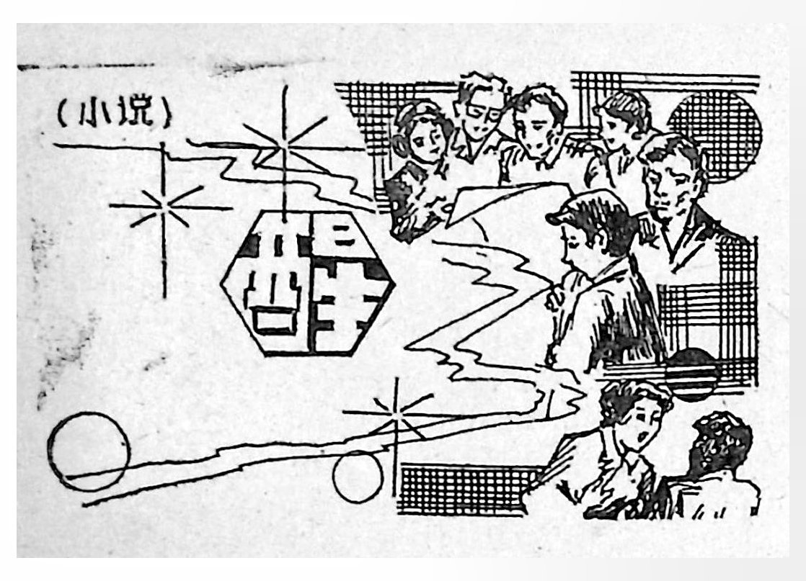

佚名 《人事》1990年第2期（总第53期），第40页
醒（题图）
Sobering Up (title illustration)
- Text in the drawing
- 醒（小说）
Sobering Up (short story) - Passage illustrated
渐渐地，我从人们的微笑、奉承中，悟出了一个道理：位置，我的工作位置发生了变化，手中有了干部职工的调配权力……
Gradually, from people's smiles and flattery, I grasped something: position — my position at work had changed; I now held the power to assign and transfer cadres and workers…From the short story 醒 (“Sobering Up”) by Zhou Lixian, on the same page. 周立宪《醒》（小说），同页
- Description
- Title illustration for the story: the title character in a hexagon amid starbursts, with a crowd of smiling faces pressing in toward it.
- Note
- In the story a young man transferred from the boiler room to the personnel section finds everyone suddenly eager to do him favours. His departing bureau chief invites him to dinner and warns him that people are seen carrying gifts into his home — then serves him a soup “to sober up.”
- Artist
- Unattributed 佚名
- Published in
- 《人事》1990年第2期（总第53期）, p. 40
- Themes
- Gifts and banquets · Connections (guanxi) · Story illustrations

Cite
Unattributed, “醒（题图）” [Sobering Up (title illustration)], Renshi (Personnel) 《人事》, 1990, no. 2, p. 40.